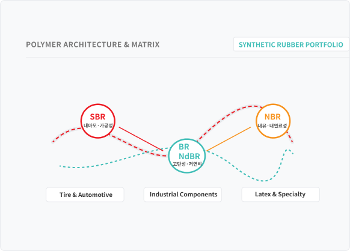

HOME > 제품소개 > 합성고무
합성고무Synthetic Rubber Solutions
글로벌 표준을 선도하는 금호석유화학의 혁신적인 고무 소재 솔루션입니다.
고기능성 합성고무 소재 Synthetic Rubber Solutions
금호석유화학의 합성고무는 뛰어난 내마모성, 탄성, 가공성을 바탕으로 타이어, 자동차 부품, 산업용 고무 및 일상 소비재 전반에 걸쳐 글로벌 표준 품질의 고기능성 솔루션을 제공합니다.

FEATURES핵심 제품 특징
글로벌 시장을 선도하는 금호석유화학 합성고무 제품군의 핵심 기술 경쟁력
-
01
- 우수한 내구성 & 탄성
- 천연고무 대비 탁월한 내마모성과 복원력을 보장하여 완제품 수명을 극대화합니다.
-
02
- 고온 내열 & 내노화성
- 열, 오존, 산화 조건에서도 물성 안정성을 유지하여 가혹 환경에서도 변형을 방지합니다.
-
03
- 맞춤형 가공성 & 배합성
- 고객사 공정에 최적화된 무니점도와 충전제 분산성으로 압출 및 가류 공정을 지원합니다.
-
04
- 글로벌 친환경 품질 표준
- NF(니트로사민 저감) 친환경 규격 및 배출가스 저감 인증을 충족하는 균일 품질을 제공합니다.
APPLICATIONS주요 적용 산업 분야
글로벌 완성차 및 산업재 제조 공정에 널리 채택되는 4대 핵심 분야
-
trip_origin
타이어 (Tires)Automotive Tires
고연비 친환경 타이어 트레드, 사이드월 및 고내마모성 컴파운드에 최적화된 합성고무를 제공합니다.
SBR / BR 트레드 친환경 고연비 타이어 -
local_shipping
자동차 부품 (Automotive)Auto Components & Sealing
엔진 마운트, 웨더스트립, 씰링, 연료 호스 및 진동을 흡수하는 방진 고무 부품 전반에 채택됩니다.
방진 마운트 부싱 연료호스 / 가스켓 -
shoe_cleats
신발 & 일상 소비재(Footwear & Life)Outsole, Sports & Consumer
고탄성 미끄럼 방지 아웃솔, 골프공 코어, 충격 흡수재 및 다양한 일상 스포츠 용품 소재로 쓰입니다.
스포츠화 아웃솔 골프공 코어 / 매트 -
valve
산업용 호스 & 벨트(Industrial)Hoses, Belts & Packings
고압 내유 호스, 컨베이어 벨트, 고무 롤러, 패킹재 등 가혹한 산업 현장의 내구 자재로 적용됩니다.
산업용 고압 호스 고강도 컨베이어 벨트
SPECIFICATIONS주요 합성고무 제품군 비교
용도 및 요구 물성에 따른 금호석유화학 대표 합성고무 포트폴리오 비교
| 제품군 (Polymer Type) | 주요 구성 (Monomer) | 핵심 특징 (Key Features) | 대표 용도 (Main Applications) | 대표 규격 (Standard) |
|---|---|---|---|---|
| SBR (Styrene Butadiene) | Styrene + Butadiene | 균일한 물성, 우수한 내마모성 및 가공성 | 승용/상용차 타이어 트레드, 신발 밑창 | SBR 1500 / 1712 |
| BR (Polybutadiene) | Butadiene | 고탄성, 우수한 반발 탄성 및 내마모성 | 고연비 타이어, 골프공 코어, 내충격 보강재 | BR 01 / NdBR |
| NBR (Acrylonitrile Butadiene) | Acrylonitrile + Butadiene | 탁월한 내유성, 내연료성, 내마모성 | 자동차 연료호스, 가스켓, 산업용 롤, 위생장갑 | KNB 35L |
| SBS (Styrene Butadiene Styrene) | Thermoplastic Elastomer | 열가소성 엘라스토머, 우수한 탄성 및 접착력 | 아스팔트 개질재, 고기능성 접착제, 신발창 | SBS 411 |
| Latex (SBR / NBR Latex) | Emulsion Latex | 정밀 침지 성형성, 얇고 질긴 인장강도 | 의료용/산업용 니트릴 장갑, 제지용 바인더 | KNL 830 |